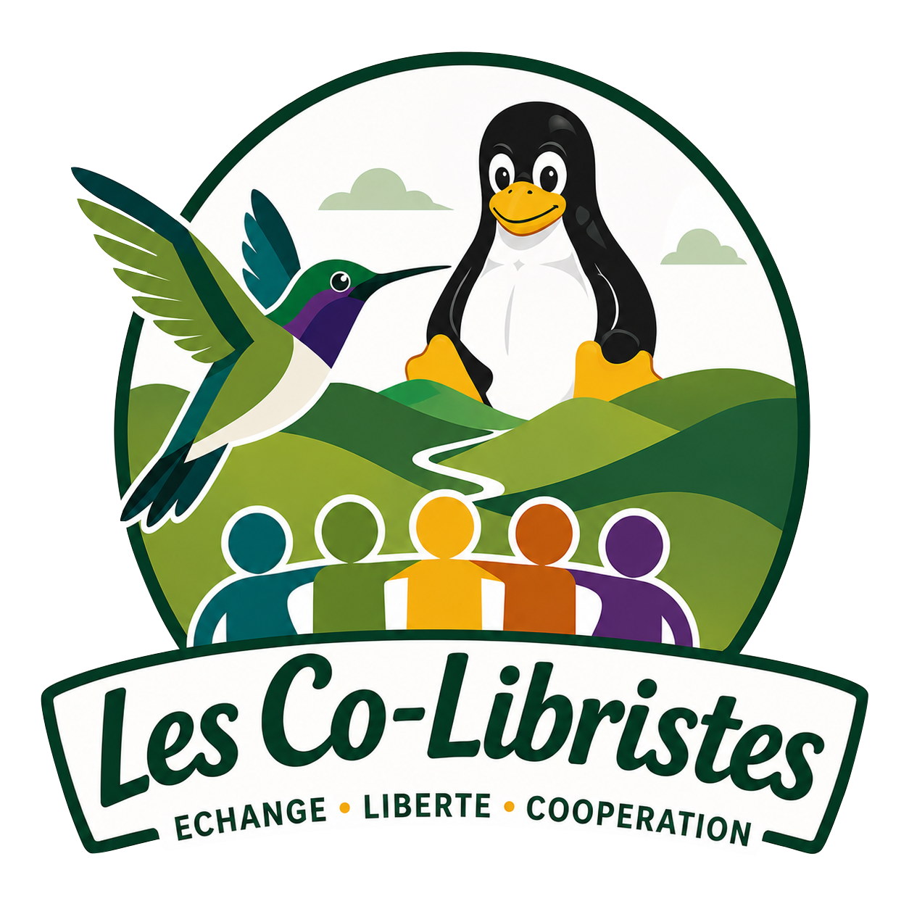

Votre Groupe d’Utilisateurs de Logiciels Libres en Wallonie Picarde.
Rejoignez-nous pour partager, apprendre et promouvoir le logiciel libre dans notre région.
Chez Les Co-Libristes,
nous croyons qu’un numérique plus humain, plus libre et plus solidaire est possible.
Nous sommes un GULL — un Groupe d’Utilisateurs de Logiciels Libres — né de l’envie de partager des connaissances, de s’entraider et de permettre à chacun de reprendre
le contrôle de ses outils numériques, quel que soit son niveau.
Nous défendons les valeurs qui font la force du logiciel libre : la liberté, l’autonomie, la transparence, le partage, la collaboration et la solidarité numérique.
Concrètement, Les Co-Libristes proposent :
Organisation d'événements pour installer et configurer vos systèmes d'exploitation libres. Nous proposons des sessions de support technique pour vous accompagner dans votre transition vers le numérique libre.
Propositions d'ateliers sur les logiciels libres. Installation et configuration. Hygiène numérique.
Venez avec vos problèmes et recevez de l’aide pour les résoudre.
Découvrez les événements à venir, les ateliers et les rencontres organisés par Les Co-Libristes ASBL. Restez informé de nos activités et participez à la promotion du logiciel libre dans la région de Wallonie Picarde.
Envie de partager tes compétences autour du logiciel libre et de Linux ?
Nous lançons une initiative locale pour rassembler des passionné(e)s dans la région de Frasnes, Lessines, Ath et alentours afin de créer un GULL (Groupe d’Utilisateurs de Logiciels Libres) baptisé "Les Co-Libristes".
L’objectif ?
S’entraider et apprendre ensemble
Organiser des rencontres, ateliers, install parties
Promouvoir le logiciel libre dans notre région
Que tu sois débutant(e), bidouilleur(se), admin sys, développeur(se) ou simplement curieux(se), tu es le/la bienvenu(e) !
Intéressé(e) pour participer ou donner un coup de main ?
Faisons grandir une communauté locale autour du libre